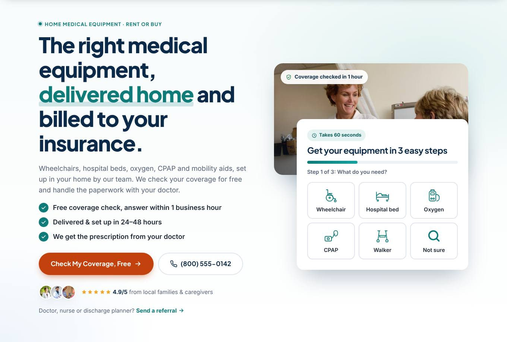

1

Hero: answer 3 questions in 5 seconds
Why it's here: Visitors decide in seconds. The headline answers: What do you sell? (medical equipment) How do I get it? (delivered home) Can I afford it? (billed to insurance). The form sits right in the first screen because most DME visitors arrive with a doctor's order and a need, so we capture the lead while intent is highest. The 3-step form starts with an easy click (what you need), which gets far more people to finish than a long form.
What's in it
- Headline, sub-headline and 3 checkmarks that answer what we sell, how it arrives and how it is paid for
- Primary orange CTA plus a click-to-call button (many seniors prefer to phone)
- 3-step form with equipment icons, progress bar and the HIPAA privacy line
- Star rating and a direct link for doctors and discharge planners